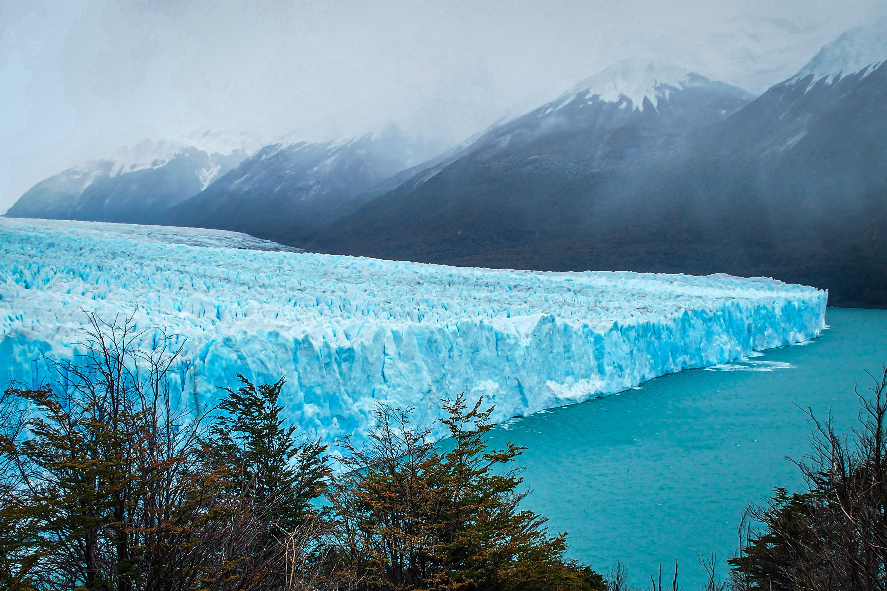
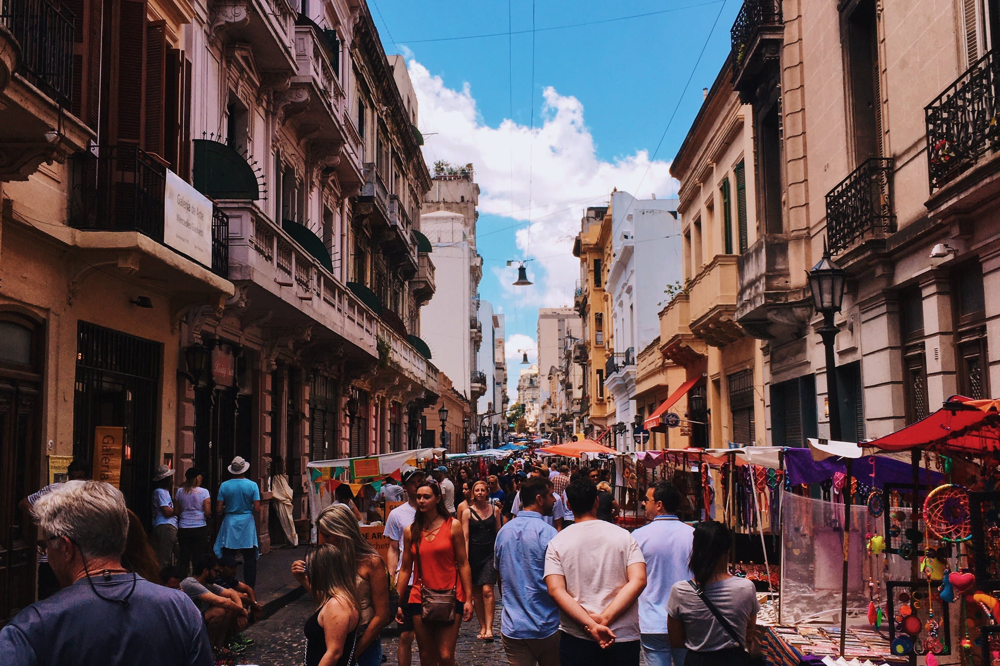
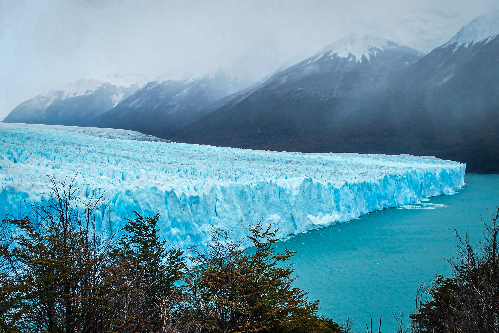
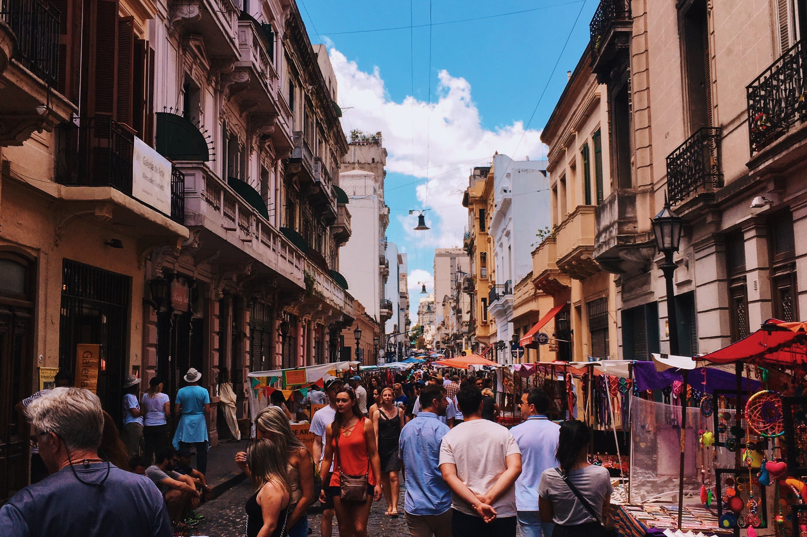

Visiting Argentine
Argentina, the land of the tango, is a country that captivates with its passion for dance, delicious cuisine, and awe-inspiring landscapes. Buenos Aires, the capital, pulsates with energy in its tango clubs and eclectic neighborhoods. The vast Pampas offer a glimpse into traditional gaucho culture, while the Andes showcase stunning vistas. Argentina is also renowned for its beef, making it a paradise for food lovers seeking succulent steaks and flavorful wines.
Iguazu Falls: Straddling the border with Brazil, these colossal waterfalls are a UNESCO World Heritage site and a breathtaking natural wonder.
Perito Moreno Glacier: Located in Los Glaciares National Park, this advancing glacier is one of the few in the world that is still growing.
Buenos Aires: Argentina's vibrant capital is known for its European-style architecture, tango music and dance, and eclectic neighborhoods like Palermo and San Telmo.
Mendoza Wine Region: Renowned for its Malbec wines, Mendoza offers picturesque vineyards against the backdrop of the Andes.
Bariloche: Nestled in the Andes and surrounded by lakes, Bariloche is a haven for outdoor enthusiasts, offering skiing, hiking, and stunning vistas.
Salta: This colonial city in northwest Argentina boasts well-preserved architecture, vibrant markets, and a unique blend of indigenous and Spanish influences.
 


